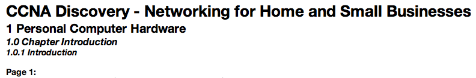

Theme User Guide
Contents
- Course Level
- Media Presentation
- Page Layout
- Keyboard Navigation
Close Window
Scroll To Top
1. Course Level
The course level attribute changes the level at which course content is displayed. The options are: "chapter", "section", "topic" or "page". The default level is "chapter".
- Chapter Level - Displays all sections, topics and pages in the current chapter.
- Section Level - Displays all topics and pages in the current section.
- Topic Level - Displays all pages in the current topic.
- Page Level - Displays only the current page.

Close Window
Scroll To Top
2. Media Presentation
The media presentation attribute changes the format in which the media on each page is displayed. The options are: "all options", "brief transcript", "full transcript" or "visual interactive media". The default presentation is "all options".
- Media Text Transcript Only - A written description of each media item is presented each time a media item is encountered in the course. This option is fully accessible via the keyboard.
- Visial Interactive Media Only - The media item is presented in its native format, which contains visual represntation of a content and often interactivy including, video, drag and drop, animations and activities. Items presented in this format are not be fully accessible and require the use of the mouse.
- Text Transcript and Visual Media - No media is displayed by default. Each time a media item is encountered in the course the user can select which presentation method to display the media. This selection is done for every media item and every media item can be displayed in any format.

Close Window
Scroll To Top
3. Page Layout
Each page is formatted the same, but the content is based on the course level selected before launch.
The first items encoutered are the course tool links. These will open an area on the top of the page with the tool selected. The two tools available are "Search" and "Glossary". The end of the tools area is marked with a horizontal rule.
- Search - Opens in new window. Contains an entry field that any search string can be entered into. Upon submitting the search a list of bages is generated where the search string has been found in the body text of that page. Pages are listed in the order they appear in the course.

- Glossary - Opens in new Window. Contains and indexed list of glossary terms that can be selected to display their definition. This tool is also launched when a linked glossary term is selected inside of the body text of a page.

The next item is the course index. This selection box contains the entire list of items in a course broken up by the selected course level view. This can be used as a quick navigation within the course. To use the index select the desired item from the list, then use the "select" button to navigate to that item. The end of the course index area is marked with a horizontal rule.
The number of sections, topics and pages displayed depends on the course level selection made at launch. The end of the level of content is marked with a horizontal rule.

Course content is displayed next and in the following format:
- Course title and course subtitle in the <h1> tag
- Chapter number and title in the <h2> tag
- Section number and title in the <h3> tag
- Topic number and title in bold and italics
- Page number in bold
The final elements on a page are the "next", "previous", and "top" navigation elements.
- Go To Next - Navigates to the next chapter, section, topic or page depending on the course level selected.
- Go To Previous - Navigates to the previous chapter, section, topic or page depending on the course level selected.
- Scroll To Top - Returns to the top of the current page.
Close Window
Scroll To Top
4. Keyboard Navigation
The following keyboard commands may be used to access tools and navigate through the course:
- Toggle Search Tool: Control+Shift+S - Opens the search tool in a new window.
- Toggle Glossary Tool: Control+Shift+G - Opens the glossary tool in a new window.
- Go To Next: Control+Shift+Right Arrow - Navigates to the next chapter, section, topic or page depending on the course level selected.
- Go To Previous: Control+Shift+Left Arrow - Navigates to the previous chapter, section, topic or page depending on the course level selected.
- Focus Next Element: Control+Shift+Down Arrow - Brings the next element on the page into focus. Similar to the Tab key.
- Focus Previous Element: Control+Shift+Up Arrow - Brings the previous element on the page into focus. Similar to the Shift+Tab key.
Note: Certain browser plugins and other overlaying software, such as screen readers, may override these keyboard commands.
Close Window
Scroll To Top